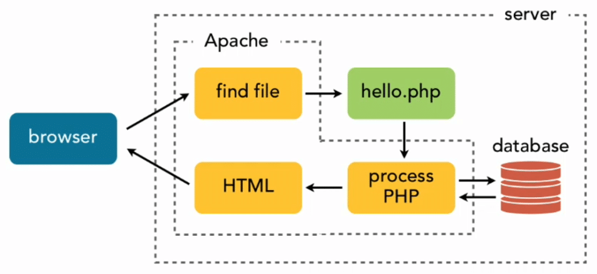
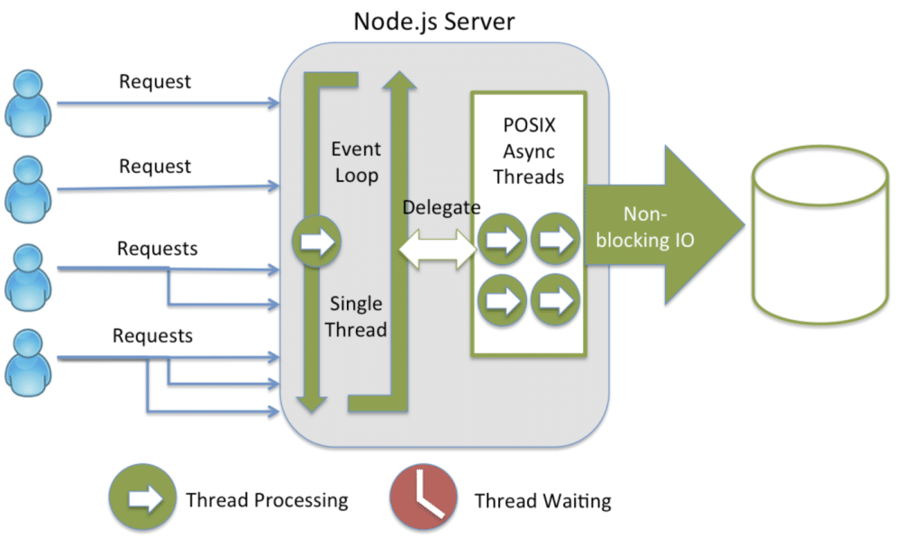

Node.js 基本概念
Node.js は、Chrome V8 JavaScript エンジンをベースに構築された JavaScript ランタイム環境です。簡単に言うと、Node.js は JavaScript をブラウザ内だけでなく、サーバーサイドでも実行できるようにします。
Node.js のコアな特徴
1. シングルスレッドのイベントループ
- Node.js はシングルスレッドのイベントループモデルを使用します
- イベント駆動とコールバック関数によって並行リクエストを処理します
- 従来のマルチスレッドプログラミングにおけるスレッド切り替えのオーバーヘッドを回避します
2. ノンブロッキング I/O
- すべての I/O 操作（ファイル読み書き、ネットワークリクエストなど）は非同期です
- I/O 操作の完了を待っている間も、プログラムはブロックされず、他のタスクを処理し続けることができます
- アプリケーションのスループットを大幅に向上させます
3. クロスプラットフォーム
- Windows、macOS、Linux などの複数のオペレーティングシステムをサポートします
- 一度書けば、どこでも実行可能
4. 豊富なエコシステム
- npm（Node Package Manager）には数百万のオープンソースパッケージがあります
- 活発な開発者コミュニティ
従来のサーバーサイド技術との違い
1、従来のサーバーサイド技術（例：Apache + PHP）：
请求1 → 创建线程1 → 处理请求 → 返回响应 → 销毁线程1 请求2 → 创建线程2 → 处理请求 → 返回响应 → 销毁线程2 请求3 → 创建线程3 → 处理请求 → 返回响应 → 销毁线程3

2、Node.js の処理方式：
请求1 → 事件循环 → 处理请求 → 返回响应 请求2 → 事件循环 → 处理请求 → 返回响应 （复用同一线程） 请求3 → 事件循环 → 处理请求 → 返回响应

| 特性 | 従来のマルチスレッドモデル | Node.js シングルスレッドモデル |
|---|---|---|
| メモリ使用量 | 各スレッドが約 2MB を占有 | シングルスレッドで、メモリ使用量が少ない |
| 並行処理 | スレッド数が並行数を制限 | イベントループで高並行を処理 |
| コンテキストスイッチ | 頻繁なスレッド切り替えのオーバーヘッド | スレッド切り替えのオーバーヘッドなし |
| プログラミングの複雑さ | スレッド同期の処理が必要 | ロックやスレッド同期の問題を回避 |
| 適用シーン | CPU 集約型タスク | I/O 集約型タスク |
Node.js の応用シーン
1、適した応用シーン
Web アプリケーション
- RESTful API サービス
- シングルページアプリケーション（SPA）のバックエンドサービス
- リアルタイム Web アプリケーション
リアルタイムアプリケーション
- チャットアプリケーション
- オンラインゲーム
- コラボレーションツール（例：オンラインドキュメント編集）
マイクロサービスアーキテクチャ
- 軽量なマイクロサービス
- API ゲートウェイ
- サービス間通信
ツールとコマンドラインアプリケーション
- ビルドツール（例：Webpack、Gulp）
- スキャフォールディングツール
- 自動化スクリプト
モノのインターネット（IoT）アプリケーション
- デバイスデータの収集
- センサーデータの処理
2、適さない応用シーン
CPU 集約型タスク
- 画像/動画処理
- 複雑な数学的計算
- ビッグデータ分析
大量の計算を必要とするアプリケーション
- 機械学習トレーニング
- 科学計算
- 暗号通貨のマイニング
イベント駆動とノンブロッキング I/O モデル
従来のブロッキング I/O モデルの例：
例
// readFileSync のたびにプログラムが「止まり」、ファイルの読み込みが完了するまで待ってから次に進みます
const data1 = readFileSync('file1.txt'); // プログラムはここで一時停止し、読み込み完了を待ちます
const data2 = readFileSync('file2.txt'); // data1 を読み終えたら、また一時停止して待ちます
const data3 = readFileSync('file3.txt'); // data2 を読み終えたら、また一時停止して待ちます
console.log('すべてのファイルの読み込みが完了しました'); // 3つのファイルをすべて読み終えて初めてここに到達します
// 総所要時間 = file1 の読み込み時間 + file2 の読み込み時間 + file3 の読み込み時間
Node.js のノンブロッキング I/O モデルの例：
例
const fs = require('fs');
// 3つのファイル読み込み操作はほぼ同時に発行され、プログラムはどれかが完了するのを待ちません
fs.readFile('file1.txt', (err, data1) => {
// このコールバック関数は file1.txt の読み込みが完了すると自動的に呼び出されます
console.log('ファイル1の読み込み完了');
});
fs.readFile('file2.txt', (err, data2) => {
// このコールバック関数は file2.txt の読み込みが完了すると自動的に呼び出されます
console.log('ファイル2の読み込み完了');
});
fs.readFile('file3.txt', (err, data3) => {
// このコールバック関数は file3.txt の読み込みが完了すると自動的に呼び出されます
console.log('ファイル3の読み込み完了');
});
// 注意：この行のコードが最初に実行されます！上記の3つのファイル読み込み操作は非同期であるため、
// 読み込みリクエストを発行した後、プログラムはすぐに次へ進み、ファイルの読み込み完了を待ちません
console.log('プログラムはファイル読み込みを待たずに実行を続けます');
// 実際の出力順序の例：
// プログラムはファイル読み込みを待たずに実行を続けます ← 最初に出力
// ファイル2の読み込み完了 ← 先に読み終わったファイルが先に出力され、順序は固定されません
// ファイル1の読み込み完了
// ファイル3の読み込み完了
// 総所要時間 ≈ 3つのファイルのうち最も遅い読み込み時間（順次実行ではなく並行実行）
イベントループの仕組み：
イベントループは Node.js がノンブロッキング I/O を実現する中核的な仕組みです。常に実行され、実行待ちのタスクがないかを絶えずチェックすることで、「シングルスレッドでの並行処理」を実現しています：
- コールスタック（Call Stack）：同期コードを実行します。関数呼び出し時にスタックへ積まれ、実行完了後にスタックから取り出されます
- イベントキュー（Event Queue）：非同期操作完了後のコールバック関数を格納し、コールスタックが空いたときに順に実行します
- イベントループ（Event Loop）：コールスタックとイベントキューを監視し続け、コールスタックが空になると、イベントキューからコールバックを取り出してコールスタックに入れて実行します
イベントループは固定の順序で次のフェーズを順に処理します：
┌───────────────────────────┐
┌─>│ timers │ ← 执行 setTimeout、setInterval 的到期回调
│ └─────────────┬─────────────┘
│ ┌─────────────┴─────────────┐
│ │ pending callbacks │ ← 执行上一轮循环中延迟的 I/O 回调（如某些系统错误回调）
│ └─────────────┬─────────────┘
│ ┌─────────────┴─────────────┐
│ │ idle, prepare │ ← Node.js 内部使用，开发者一般不需要关心
│ └─────────────┬─────────────┘
│ ┌─────────────┴─────────────┐
│ │ poll │ ← 核心阶段：获取新的 I/O 事件并执行其回调（如文件读取、网络请求完成）
│ └─────────────┬─────────────┘
│ ┌─────────────┴─────────────┐
│ │ check │ ← 执行 setImmediate 的回调（在 poll 阶段之后立即执行）
│ └─────────────┬─────────────┘
│ ┌─────────────┴─────────────┐
└──┤ close callbacks │ ← 执行关闭事件的回调，如 socket.on('close', ...)
└───────────────────────────┘
初心者にとって、最も覚えておくべきことは：同期コードは常に優先して実行され、非同期コールバック（ファイル読み込み完了の処理など）はコールスタックが空になってから実行されます。
JavaScript ランタイム環境
V8 エンジンの概要
V8 は Google が開発した高性能な JavaScript エンジンであり、Chrome ブラウザの中核コンポーネントでもあります。
Node.js は V8 エンジンを使って JavaScript コードを実行します。
V8 エンジンの特徴：
ジャストインタイムコンパイル（JIT）
- JavaScript コードを直接マシンコードにコンパイルします
- 中間バイトコードが不要で、実行効率がより高い
ガベージコレクション
- 自動メモリ管理により、開発者は手動でメモリを解放する必要がありません
- 世代別ガベージコレクションアルゴリズムを使用し、メモリを新生代と老生代に分けて管理することで、回収効率を向上させます
最適化技術
- インラインキャッシュ（Inline Caching）：オブジェクトのプロパティ検索結果をキャッシュし、重複する検索を回避します
- 隠しクラス（Hidden Classes）：動的言語のオブジェクト構造を静的にして、プロパティアクセスを高速化する
- 動的最適化：実行時にホットスポットコードを分析し、的を絞った最適化を行う
ブラウザの JavaScript vs Node.js の JavaScript
どちらもJavaScript言語を使用しますが、実行環境の違いによりいくつかの重要な違いがあります：
共通点：
- どちらも同じJavaScript構文を使用する
- どちらもES6+の機能をサポートする
- どちらもV8エンジンを使用する（Chromeブラウザ）
相違点：
| 特性 | ブラウザ JavaScript | Node.js JavaScript |
|---|---|---|
| グローバルオブジェクト | window |
global |
| モジュールシステム | ES6 modules, AMD | CommonJS, ES6 modules |
| ファイルシステムへのアクセス | アクセス不可（セキュリティ上の制限による） | 完全にアクセス可能 |
| ネットワークリクエスト | XMLHttpRequest, Fetch | http, https モジュール |
| DOM操作 | サポート（ページ要素の操作） | サポートしない（サーバー側にはページがない） |
| プロセス制御 | サポートしない | サポート（環境変数の読み取り、プロセスの終了などが可能） |
ブラウザ環境の例：
例
console.log(window); // ブラウザのグローバルオブジェクト。すべてのブラウザAPIを含む
document.getElementById('app'); // IDでページ要素を取得（Node.jsでは利用不可）
localStorage.setItem('key', 'value'); // ブラウザのローカルストレージ（Node.jsでは利用不可）
Node.js環境の例：
例
console.log(global); // Node.jsのグローバルオブジェクト（ブラウザのwindowに相当）
const fs = require('fs'); // 組み込みのファイルシステムモジュールをインポート（ブラウザでは利用不可）
fs.readFile('data.txt', 'utf8', callback); // サーバーのローカルファイルを読み取る（ブラウザでは利用不可）
グローバルオブジェクトの違い
ブラウザのグローバルオブジェクト：
例
console.log(this === window); // true、最上位のthisはwindowオブジェクト
var globalVar = 'hello';
console.log(window.globalVar); // 'hello'、varで宣言した変数はwindowのプロパティになる
Node.jsのグローバルオブジェクト：
例
// 注意：Node.jsでは各ファイルが独立したモジュールであり、モジュール内のthisはglobalと等しくない
console.log(this === global); // false（モジュールスコープでは、thisはmodule.exportsを指す）
var globalVar = 'hello';
console.log(global.globalVar); // undefined、モジュール内の変数は自動的にglobalに紐づかない
// Node.jsのモジュールスコープ
console.log(this); // {} 空のオブジェクト、つまりmodule.exportsの初期値
console.log(module.exports === this); // true、モジュール内のthisはmodule.exportsを指す
Node.js固有のグローバル変数：
例
console.log(__filename); // 現在のモジュールファイルの絶対パス、例：/home/user/project/app.js
console.log(process); // プロセスオブジェクト。コマンドライン引数（process.argv）、環境変数（process.env）などを読み取れる
console.log(Buffer); // バイナリデータを処理するためのコンストラクタ。ファイルの読み書きやネットワーク通信でよく使われる
Node.js の利点と限界
利点の詳細
1. 高並行処理能力
従来のマルチスレッドサーバーが10,000の同時接続を処理するには約20GBのメモリが必要（各スレッド約2MB）ですが、Node.jsは同じ数の接続をわずかなメモリで処理できます。
例
const http = require('http');
const server = http.createServer((req, res) => {
// 非同期操作（データベースのクエリなど）をシミュレートし、100ms後にレスポンスを返す
// この100msの間に、イベントループは他のリクエストを処理し続けることができ、ブロックされない
setTimeout(() => {
res.writeHead(200, {'Content-Type': 'text/plain'});
res.end('Hello World\n');
}, 100);
});
server.listen(3000, () => {
console.log('サーバーは http://localhost:3000/ で実行中');
});
// 非ブロッキングI/Oとイベントループ機構のおかげで、このサーバーは数千のリクエストを同時に処理してもブロックされない
2. 高速開発
統一されたJavaScript言語スタック（フロントエンドとバックエンドの両方でJavaScriptを使用）により、フロントエンドとバックエンドの開発がより効率的になります。開発者は1つの言語を習得するだけで、フロントエンドとバックエンドの両方のコードを書くことができ、両者間でコードロジックを共有できます：
例
function validateEmail(email) {
const regex = /^[^\s@]+@[^\s@]+\.[^\s@]+$/;
return regex.test(email);
}
// フロントエンドで使用（ブラウザで実行）：ユーザーがフォームを送信する際にまずフロントエンドで検証し、無効なリクエストがサーバーに送られるのを防ぐ
if (validateEmail(userInput)) {
// 検証成功、サーバーに送信
}
// バックエンドで使用（Node.jsで実行）：サーバーが再度検証し、フロントエンドを迂回して直接APIをリクエストするのを防ぐ
if (validateEmail(req.body.email)) {
// 検証成功、データベースに保存
}
3. 統一言語スタックの利点
- コード再利用：フロントエンドとバックエンドでユーティリティ関数、データ検証ロジック、定数定義などを共有できる
- チーム効率：開発者はフロントエンドとバックエンドの両方の開発を担当でき、コミュニケーションコストを削減できる
- 技術スタックの簡素化：JavaScriptという1つの言語を習得するだけでよく、学習コストと技術的複雑さを低減できる
4. 豊富なnpmエコシステム
# npm 提供了数百万个开源包，几乎任何功能都能找到现成的库 npm search express # 搜索名为 express 的包 npm install express # 安装 express 包到当前项目 npm update # 更新当前项目中所有包到最新兼容版本
限界の分析
1. CPU負荷の高いタスクのパフォーマンス問題
例
// fibonacciSyncは純粋な計算タスクであり、CPUを占有し続けるため、その間イベントループは他のリクエストを処理できない
function fibonacciSync(n) {
if (n < 2) return n;
return fibonacciSync(n - 1) + fibonacciSync(n - 2);
}
// これによりアプリ全体が数秒間ブロックされ、その間すべてのリクエストに応答できなくなる
console.log(fibonacciSync(40));
// 解決策：Worker Threadsを使用してCPU負荷の高いタスクを独立したスレッドで実行する、
// メインスレッドのイベントループはブロックされない
const { Worker, isMainThread, parentPort, workerData } = require('worker_threads');
if (isMainThread) {
// メインスレッド：Workerを作成し、パラメータ { n: 40 } を渡す
// Workerは独立したスレッドでこの現在のファイルを実行する（__filenameは現在のファイルパスを指す）
const worker = new Worker(__filename, {
workerData: { n: 40 }
});
// Workerからのメッセージ（計算結果）を監視する
worker.on('message', (result) => {
console.log('結果:', result); // Workerの計算が完了すると、メインスレッドはここで結果を受け取る
});
} else {
// Workerスレッド：workerDataを介してメインスレッドから渡されたパラメータを取得し、計算を実行して結果を送信する
const result = fibonacciSync(workerData.n);
parentPort.postMessage(result); // 結果をメインスレッドに送り返す
}
2. コールバック地獄の問題
例
fs.readFile('file1.txt', (err, data1) => {
if (err) throw err;
fs.readFile('file2.txt', (err, data2) => { // ネスト1層目
if (err) throw err;
fs.readFile('file3.txt', (err, data3) => { // ネスト2層目
if (err) throw err;
// 実際のプロジェクトではこのようなネストが十数層に及ぶことがあり、コードの保守性に深刻な影響を与える
console.log('すべてのファイルの読み取りが完了しました');
});
});
});
// 現代的な解決策：Promise + async/awaitを使用して、非同期コードを同期コードのように直感的に書けるようにする
const fsPromises = require('fs').promises;
async function readFiles() {
try {
// awaitは各ファイルの読み取り完了を待機するが、関数全体はイベントループをブロックしない
// 注意：ここでは順次読み取りです。複数のファイルを並行して読み取る必要がある場合は、Promise.all()を使用できます
const data1 = await fsPromises.readFile('file1.txt');
const data2 = await fsPromises.readFile('file2.txt');
const data3 = await fsPromises.readFile('file3.txt');
console.log('すべてのファイルの読み取りが完了しました');
} catch (err) {
// try/catchを使用すると、すべての非同期エラーをまとめて処理でき、各コールバックで個別に判断する必要がない
console.error('ファイルの読み取りに失敗:', err);
}
}
3. シングルスレッドの脆弱性
例
// マルチスレッドとは異なり、シングルスレッドでは処理されないエラーが1つあるだけでサービス全体が停止する
setTimeout(() => {
throw new Error('キャッチされない例外'); // これによりアプリ全体がクラッシュし、すべてのリクエストに応答できなくなる
}, 1000);
// 解決策：グローバル例外ハンドラーを登録し、アプリがクラッシュする前にログを記録してグレースフルに終了する
process.on('uncaughtException', (err) => {
console.error('キャッチされない例外:', err);
// ここではまずエラーログを記録してから終了し、サイレントクラッシュによる問題の調査困難を避ける
process.exit(1); // 終了コード1は異常終了を表す
});
process.on('unhandledRejection', (reason, promise) => {
// Promiseがrejectされたが.catch()で処理されていない場合に発生する
console.error('処理されないPromiseの拒否:', reason);
process.exit(1);
});
適用シーンの分析
1、RESTful APIサービス
例
// まず express をインストールする必要があります：npm install express
const express = require('express');
const app = express();
app.use(express.json()); // ミドルウェア：リクエストボディ内のJSONデータを自動解析する
// GETリクエスト：ユーザーリストを取得（HTTPメソッドGET、パス /api/users に対応）
app.get('/api/users', (req, res) => {
const users = [
{ id: 1, name: '张三' },
{ id: 2, name: '李四' }
];
res.json(users); // JSON形式でデータを返す
});
// POSTリクエスト：新規ユーザーを作成（クライアントがリクエストボディでユーザー情報を送信）
app.post('/api/users', (req, res) => {
const newUser = req.body; // クライアントから送信されたJSONデータを取得する
// 実際のプロジェクトでは、通常ここでユーザー情報をデータベースに保存する
res.status(201).json({ message: 'ユーザー作成成功', user: newUser });
});
// PUTリクエスト：指定したユーザー情報を更新（:id はルートパラメータ。例：/api/users/1 はIDが1のユーザーを更新することを示す）
app.put('/api/users/:id', (req, res) => {
const { id } = req.params; // パスからユーザーIDを取得する
const updatedData = req.body; // リクエストボディから更新内容を取得する
res.json({ message:`ユーザー ${id}更新成功`, data: updatedData });
});
// DELETEリクエスト：指定したユーザーを削除する
app.delete('/api/users/:id', (req, res) => {
const { id } = req.params;
res.json({ message:`ユーザー ${id}削除成功`});
});
app.listen(3000, () => {
console.log('APIサーバーは http://localhost:3000/ で実行中');
});
2、リアルタイムアプリケーション
例
// まずインストールする必要があります：npm install socket.io
const io = require('socket.io')(server);
// クライアントの接続イベントを監視し、新しいユーザーが接続するたびに1回トリガーされる
io.on('connection', (socket) => {
// 現在接続中のクライアントが送信する 'chat message' イベントを監視する
socket.on('chat message', (msg) => {
io.emit('chat message', msg); // メッセージをオンライン中の全クライアントにブロードキャストする（送信者を含む）
});
});
3、ミドルウェアとプロキシサービス
例
// フロントエンドからの /api/xxx リクエストをバックエンドの実際のAPIサーバーに転送し、実際のアドレスを隠す。クロスドメイン問題の解決によく使われる
// まずインストールする必要があります：npm install http-proxy-middleware
const httpProxy = require('http-proxy-middleware');
const proxy = httpProxy({
target: 'http://api.example.com', // 実際のバックエンドAPIサーバーのアドレス
changeOrigin: true, // リクエストヘッダーのHostをtargetアドレスに変更する
pathRewrite: {
'^/api': '' // パス内の /api プレフィックスを除去してから転送する。例：/api/users → /users
}
});
クリックしてノートを共有
<p style="font-size:14px;">ノートはこの記事の内容を拡張したものである必要があります！</p><br> <p style="font-size:12px;"><a href="../tougao.html" target="_blank">記事の投稿はこちらをクリック</a></p> <p style="font-size:14px;"><a href="../w3cnote/runoob-user-test-intro.html" target="_blank">登録招待コードの取得方法</a></p> <h3 class="text-muted"><i class="fa fa-info-circle" aria-hidden="true"></i> ノートを共有する前に<a href=";.html" class="runoob-pop">ログイン</a>が必要です！</h3> <p><a href="../w3cnote/runoob-user-test-intro.html" target="_blank">登録招待コードの取得方法</a></p>